Cylinder Head, Intake Manifold, Exhaust Manifold: Inspection
- INSPECT CYLINDER HEAD FOR FLATNESS
- Using a precision straightedge and feeler gauge, measure the surface that is in contact with the cylinder block and the manifolds for warpage.
Maximum warpage
CYLINDER HEAD WARPAGE SPECIFICATIONSurface Specified Condition Cylinder block side 0.05 mm (0.0020 in.) Intake manifold side 0.10 mm (0.0039 in.) Exhaust manifold side 0.10 mm (0.0039 in.) 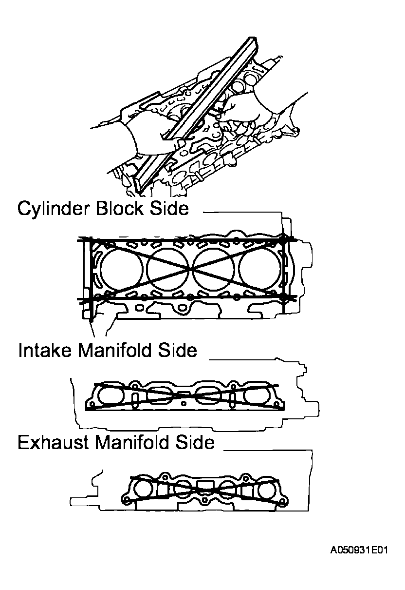
Courtesy of © TOYOTA, LICENSE AGREEMENT TMS1002If the warpage is greater than the maximum, replace the cylinder head.
- Using a precision straightedge and feeler gauge, measure the surface that is in contact with the cylinder block and the manifolds for warpage.
- INSPECT CYLINDER HEAD FOR CRACKS
- Using a dye penetrant, check the combustion chamber, intake ports, exhaust ports and cylinder block surface for cracks.
If cracked, replace the cylinder head.
- Using a dye penetrant, check the combustion chamber, intake ports, exhaust ports and cylinder block surface for cracks.
- INSPECT CYLINDER HEAD SET BOLT
- Using a vernier caliper, measure the length of head bolts from the seat to the end.
Standard length: 142.8 to 144.2 mm (5.622 to 5.677 in.)
Maximum length: 147.1 mm (5.791 in.)
If the length is greater than the maximum, replace the bolt.
- Using a vernier caliper, measure the length of head bolts from the seat to the end.
- INSPECT CYLINDER BLOCK FOR FLATNESS
- Using a precision straightedge and feeler gauge, measure the surface which is in contact with the cylinder head gasket for warpage.
Maximum warpage: 0.05 mm (0.0020 in.)
If the warpage is greater than the maximum, replace the cylinder block.
- Using a precision straightedge and feeler gauge, measure the surface which is in contact with the cylinder head gasket for warpage.
- INSPECT INTAKE VALVE
- Check the overall valve length.
Standard overall length: 89.25 mm (3.5138 in.)
Minimum overall length: 88.75 mm (3.4941 in.)
If the overall length is less than the minimum, replace the valve.
- Using a micrometer, measure the diameter of the valve stem.
Standard valve stem diameter: 4.970 to 4.985 mm (0.1957 to 0.1963 in.)
- Check the valve head margin thickness.
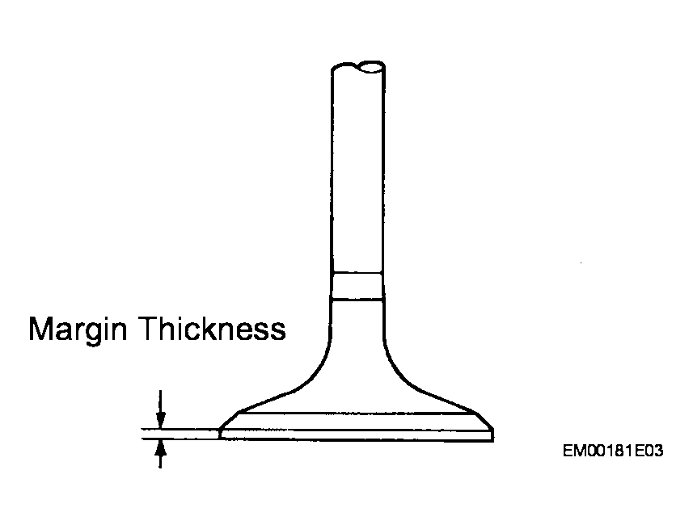
Courtesy of © TOYOTA, LICENSE AGREEMENT TMS1002Standard margin thickness: 1.0 mm (0.039 in.)
Minimum margin thickness: 0.7 mm (0.028 in.)
If the margin thickness is less than the minimum, replace the valve.
- Check the overall valve length.
- INSPECT EXHAUST VALVE
- Check the overall valve length.
Standard overall length: 87.90 mm (3.4606 in.)
Minimum overall length: 87.40 mm (3.4409 in.)
If the overall length is less than the minimum, replace the valve.
- Using a micrometer, measure the diameter of the valve stem.
Standard valve stem diameter: 4.965 to 4.980 mm (0.1955 to 0.1961 in.)
- Check the valve head margin thickness.
Standard margin thickness: 1.15 mm (0.045 in.)
Minimum margin thickness: 0.7 mm (0.028 in.)
If the margin thickness is less than the minimum, replace the valve.
- Check the overall valve length.
- INSPECT VALVE SPRING
- Using a vernier caliper, measure the free length of the valve spring.
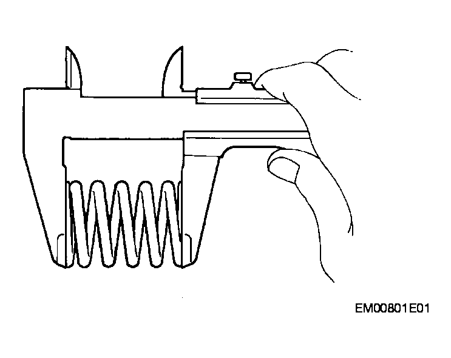
Courtesy of © TOYOTA, LICENSE AGREEMENT TMS1002Standard free length: 45.05 to 45.15 mm (1.774 to 1.778 in.)
If the free length is not as specified, replace the spring.
- Using a steel square, measure the deviation of the valve spring.
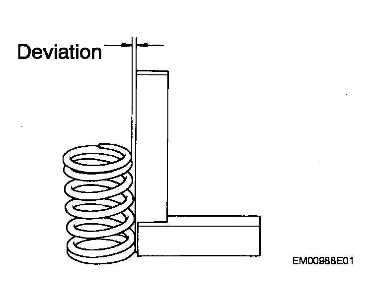
Courtesy of © TOYOTA, LICENSE AGREEMENT TMS1002Maximum deviation: 1.6 mm (0.063 in.)
Maximum angle (reference): 2°
If the deviation is greater than the maximum, replace the spring.
- Using a spring tester, measure the tension of the valve spring at the specified installed length.
Standard installed tension: 149 to 165 N (15.2 to 16.8 kgf, 33.5 to 37.1 lbf)
at 32.5 mm (1.280 in.)
Maximum working tension: 286 to 316 N (29.1 to 32.2 kgf, 64.2 to 71.0 lbf)
at 23.9 mm (0.941 in.)
If the installed tension is not as specified, replace the valve spring.
- Using a vernier caliper, measure the free length of the valve spring.
- INSPECT VALVE GUIDE BUSH OIL CLEARANCE
- Using a caliper gauge, measure the inside diameter of the guide bush.
Bush inside diameter: 5.010 to 5.030 mm (0.1972 to 0.1980 in.)
- Subtract the valve stem diameter measurement from the guide bush inside diameter measurement.
Standard oil clearance
GUIDE BUSH INSIDE DIAMETER SPECIFICATIONGuide Bush Specified Condition Intake 0.025 to 0.060 mm (0.0010 to 0.0024 in.) Exhaust 0.030 to 0.065 mm (0.0012 to 0.0026 in.) Maximum oil clearance
GUIDE BUSH INSIDE DIAMETER SPECIFICATIONGuide Bush Specified Condition Intake 0.08 mm (0.0032 in.) Exhaust 0.10 mm (0.0039 in.) 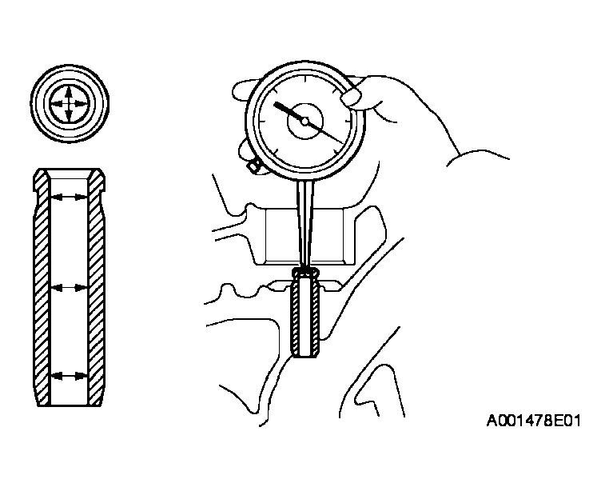
Courtesy of © TOYOTA, LICENSE AGREEMENT TMS1002If the clearance is greater than the maximum, replace the valve and guide bush (see REPLACEMENT ).
- Using a caliper gauge, measure the inside diameter of the guide bush.
- INSPECT INTAKE VALVE SEAT
- Apply a light coat of Prussian blue (or white lead) to the valve face.
- Lightly press the valve against the seat.
- Check the valve face and seat according to the following procedure.
- If blue appears 360° around the face, the valve is concentric. If not, replace the valve.
- If blue appears 360° around the valve seat, the guide and face are concentric. If not, resurface the seat.
- Check that the seat contact is in the middle of the valve face with the width between 1.0 to 1.4 mm (0.039 to 0.055 in.).
- REPAIR INTAKE VALVE SEAT
- If the seating is too high on the valve face, use 20° and 45° cutters to correct the seat.
- If the seating is too low on the valve face, use 75° and 45° cutters to correct the seat.
- Hand-lap the valve and valve seat with an abrasive compound.
- Recheck the valve seating position.
- REPAIR EXHAUST VALVE SEAT
- If the seating is too high on the valve face, use 20° and 45° cutters to correct the seat.
- If the seating is too low on the valve face, use 75° and 45° cutters to correct the seat.
- Hand-lap the valve and valve seat with an abrasive compound.
- Recheck the valve seating position.
- INSPECT VALVE LIFTER
- Using a micrometer, measure the lifter diameter.
Standard lifter diameter: 30.966 to 30.976 mm (1.2191 to 1.2195 in.)
- Using a micrometer, measure the lifter diameter.
- INSPECT VALVE LIFTER OIL CLEARANCE
- Using a caliper gauge, measure the lifter bore diameter of the cylinder head.
Standard lifter bore diameter: 31.000 to 31.025 mm (1.2205 to 1.2215 in.)
- Subtract the lifter diameter measurement from the lifter bore diameter measurement.
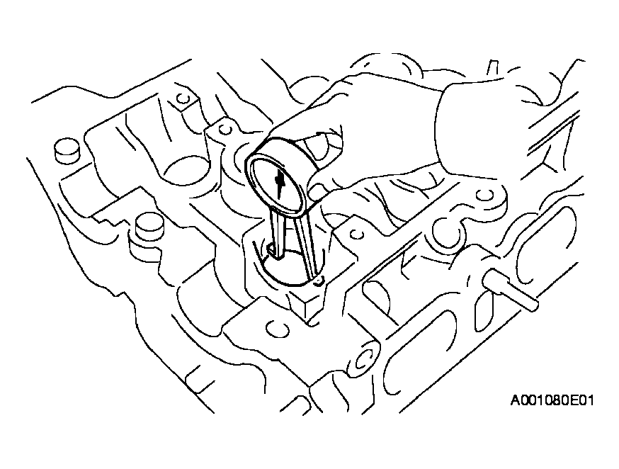
Courtesy of © TOYOTA, LICENSE AGREEMENT TMS1002Standard oil clearance: 0.024 to 0.059 mm (0.0009 to 0.0023 in.)
Maximum oil clearance: 0.1 mm (0.0039 in.)
If the oil clearance is greater than the maximum, replace the lifter. If necessary, replace the cylinder head.
- Using a caliper gauge, measure the lifter bore diameter of the cylinder head.
- INSPECT CAMSHAFT TIMING GEAR OPERATION
- Check the lock of the camshaft timing gear.
- Clamp the camshaft in a vise, and check that the camshaft timing gear is locked.NOTE: Be careful not to damage the camshaft.
- Clamp the camshaft in a vise, and check that the camshaft timing gear is locked.
- Release the lock pin.
- Cover the 4 oil paths of the cam journal with tape as shown in the illustration.
HINT:
One of the 2 grooves located on the cam journal is for retarding cam timing (upper) and the other is for advancing cam timing (lower).
Each groove has 2 oil paths. Plug one of the oil paths for each groove with rubber pieces before wrapping the cam journal with the tape.
- Puncture the tape for the advance oil path and for the retard oil path on the opposite side from the advance oil path.
- Apply air pressure into the 2 broken tape paths (the advance side path and retard side path) with about 150 kPa (1.5 kgf/cm2
, 22 psi).NOTE: Cover the paths with cloth or equivalent to prevent oil from splashing.
- Confirm if the camshaft timing gear assembly revolves in the timing advance direction when reducing the air pressure of the timing retard path.
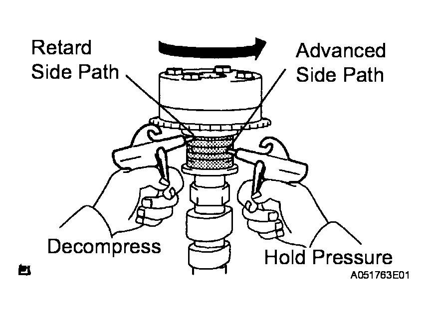
Courtesy of © TOYOTA, LICENSE AGREEMENT TMS1002HINT:
The lock pin is released, and the camshaft timing gear revolves in the advance direction.
- When the camshaft timing gear reaches the most advanced position, remove the air pressure of the timing retard side path, and then release the air pressure of the timing advance side path.NOTE: The camshaft timing gear assembly occasionally shifts to the retard side abruptly if the air compression of the advanced side path is released first. This often results in the breakage of the lock pin.
- Cover the 4 oil paths of the cam journal with tape as shown in the illustration.
- Check smooth revolution.
- Except the position where the lock pin meets at the most retarded angle, let the valve timing controller assembly turn back and forth.
Check the movable range and that there is no disturbance.
Standard condition: Smooth movable range is about 22.5°
NOTE: Be sure to perform this check by hand, instead of air pressure.
- Except the position where the lock pin meets at the most retarded angle, let the valve timing controller assembly turn back and forth.
- Check the lock in the most retarded position.
- Confirm that the camshaft timing gear assembly is locked at the most retarded position.
- Check the lock of the camshaft timing gear.
- INSPECT CAMSHAFT TIMING GEAR
- Wrap the chain around the timing sprocket.
- Using a vernier caliper, measure the diameter of the timing gear with the chain.
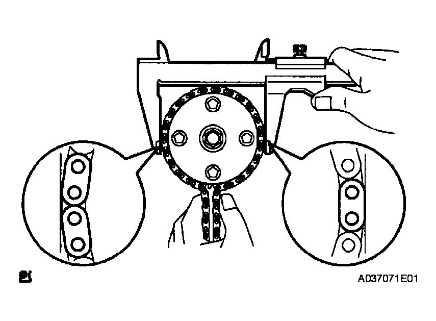
Courtesy of © TOYOTA, LICENSE AGREEMENT TMS1002Minimum gear diameter (w/chain): 96.2 mm (3.787 in.)
If the diameter is less than the minimum, replace the sprocket.
NOTE: Vernier caliper must come into contact with the chain link for measuring.
- INSPECT CAMSHAFT TIMING SPROCKET
- Wrap the chain around the timing sprocket.
- Using a vernier caliper, measure the diameter of the timing gear with the chain.
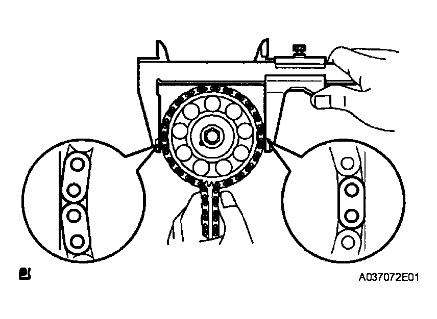
Courtesy of © TOYOTA, LICENSE AGREEMENT TMS1002Minimum gear diameter (w/chain): 96.2 mm (3.787 in.)
If the diameter is less than the minimum, replace the sprocket.
NOTE: Vernier caliper must come into contact with the chain link for measuring.
- INSPECT CAMSHAFT
- Inspect the camshaft for runout.
- Place the camshaft on V-blocks.
- Using a dial indicator, measure the circle runout at the center journal.
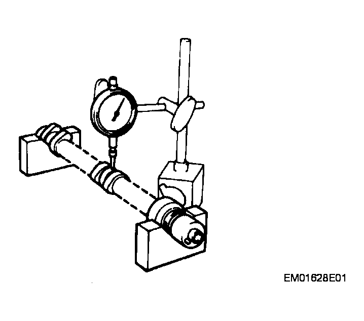
Courtesy of © TOYOTA, LICENSE AGREEMENT TMS1002Maximum circle runout: 0.03 mm (0.0012 in.)
If the circle runout is greater than the maximum, replace the camshaft.
- Inspect the cam lobes.
- Using a micrometer, measure the cam lobe height.
Standard cam lobe height: 44.617 to 44.717 mm (1.7566 to 1.7605 in.)
Minimum cam lobe height: 44.47 mm (1.7508 in.)
If the cam lobe height is less than the minimum, replace the camshaft.
- Using a micrometer, measure the cam lobe height.
- Inspect the camshaft journals.
- Using a micrometer, measure the journal diameter.
Standard journal diameter
JOURNAL DIAMETER SPECIFICATIONJournal Specified Condition No.1 journal 34.449 to 34.465 mm (1.3563 to 1.3569 in.) Other journals 22.949 to 22.965 mm (0.9035 to 0.9041 in.) If the journal diameter is not as specified, check the oil clearance.
- Using a micrometer, measure the journal diameter.
- Inspect the camshaft for runout.
- INSPECT NO. 2 CAMSHAFT
- Inspect the camshaft for runout.
- Place the camshaft on V-blocks.
- Using a dial indicator, measure the circle runout at the center journal.
Maximum circle runout: 0.03 mm (0.0012 in.)
If the circle runout is greater than the maximum, replace the camshaft.
- Inspect the cam lobes.
- Using a micrometer, measure the cam lobe height.
Standard cam lobe height: 44.666 to 44.766 (1.7585 to 1.7624 in.)
Minimum cam lobe height: 44.52 mm (1.7528 in.)
If the cam lobe height is less than the minimum, replace the camshaft.
- Using a micrometer, measure the cam lobe height.
- Inspect the camshaft journals.
- Using a micrometer, measure the journal diameter.
Standard journal diameter
JOURNAL DIAMETER SPECIFICATIONJournal Specified Condition No.1 journal 34.449 to 34.465 mm (1.3563 to 1.3569 in.) Other journals 22.949 to 22.965 mm (0.9035 to 0.9041 in.) If the journal diameter is not as specified, check the oil clearance.
- Using a micrometer, measure the journal diameter.
- Inspect the camshaft for runout.
- INSPECT CAMSHAFT THRUST CLEARANCE
- Install the camshafts.
- Using a dial indicator, measure the thrust clearance while moving the camshaft back and forth.
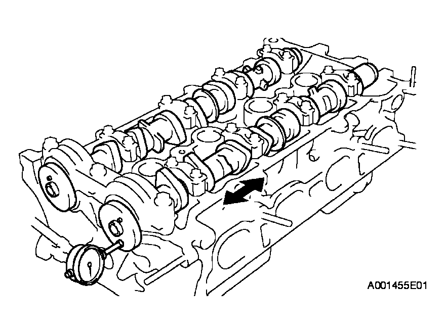
Courtesy of © TOYOTA, LICENSE AGREEMENT TMS1002Standard thrust clearance: 0.040 to 0.095 mm (0.0016 to 0.0037 in.)
Maximum thrust clearance: 0.11 mm (0.0043 in.)
If the thrust clearance is greater than the maximum, replace the camshaft. If necessary, replace the bearing caps and the cylinder head together.
- INSPECT CAMSHAFT OIL CLEARANCE
- Clean the bearing caps and the camshaft journals.
- Place the camshafts on the cylinder head.
- Lay a strip of Plastigage across each of the camshaft journals.
- Install the bearing caps.
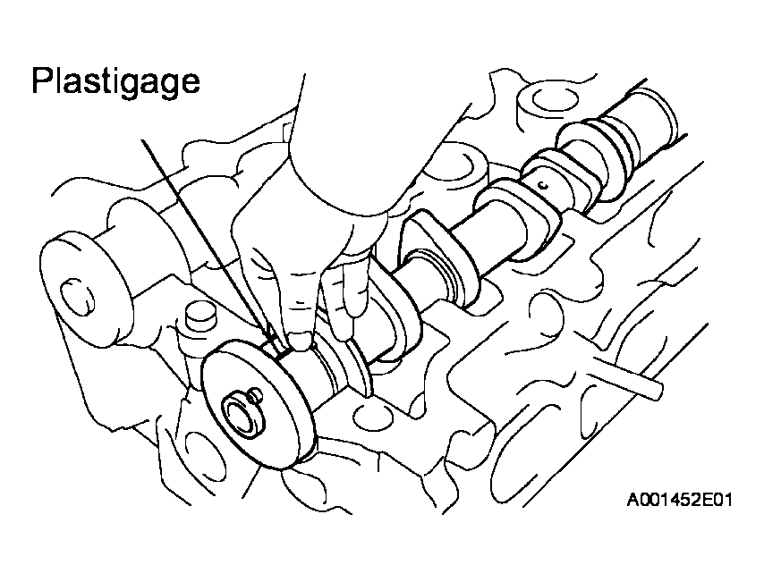
Courtesy of © TOYOTA, LICENSE AGREEMENT TMS1002Torque: 23 N*m (235 kgf*cm, 17 ft.*lbf) for No. 1
13 N*m (129 kgf*cm, 9 ft.*lbf) for No. 2
NOTE: Do not turn the camshaft. - Remove the bearing caps.
- Measure the Plastigage at its widest point.
Standard oil clearance: 0.040 to 0.095 mm (0.0016 to 0.0037 in.)
Maximum oil clearance: 0.115 mm (0.0045 in.)
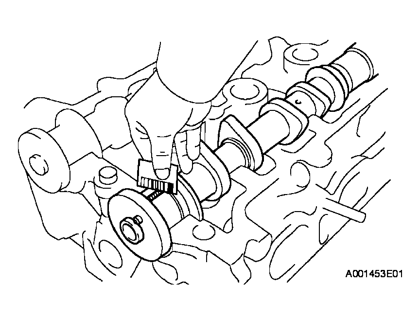
Courtesy of © TOYOTA, LICENSE AGREEMENT TMS1002If the oil clearance is greater than the maximum, replace the camshaft. If necessary, replace the bearing caps and the cylinder head together.
NOTE: Completely remove the Plastigage.